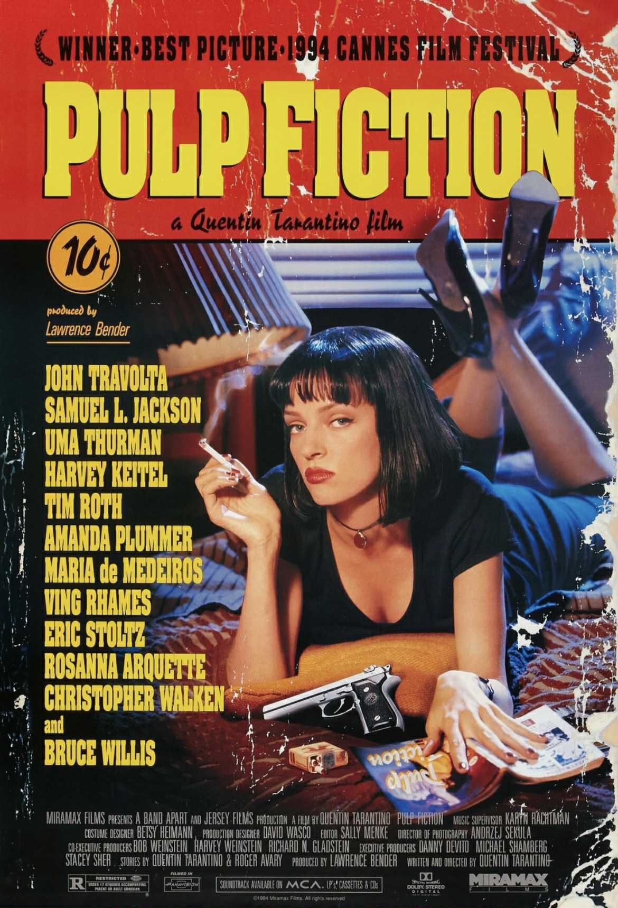

Pulp Fiction
"Pulp Fiction" წარმოადგენს კვენტინ ტარანტინოს ნამდვილი კინოს კლასიკას — ფილმი, რომელიც ცნობილია არალინეარული თხრობით, დიალოგებით სავსე სცენებით და შავ-იუმორისტული სტილით. ფილმში მთავარი როლები შესრულებული აქვთ ჯონ ტრავოლტას, უმა თურმანსა და სემუელ ელ ჯექსონს.